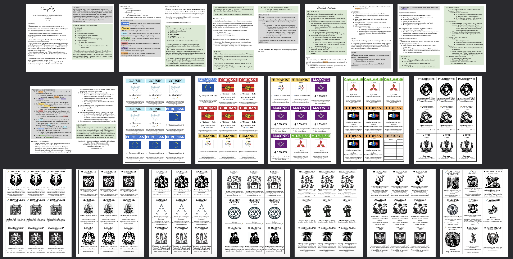

A card game inspired by Too Like the Lightning

2-7 players
1-2 hours
3 out of 5 complexity
Complicity is a high-variety card game that is free for anyone to play. You can try it out by printing this document.
(For example, I sent that PDF to Staples to get nice 100 lb. cardstock cards.)
Too Like the Lightning is a wonderful science fiction novel by Ada Palmer about:
Complicity is a fan-made game inspired by this world of passionate ideologues, senators, spies, & metaphysical anomalies. I (Alex Pear) designed & developed this game over several years to view this story via a new, interactive perspective, & to experiment with games where you see new characters every time you play. Playtesters say the game is easy to learn, has quick turns, & encourages very satisfying asymmetric compromises between players.
Have fun safeguarding your values in the political wilderness of the United Free Alliance!
Credits:
Contact: